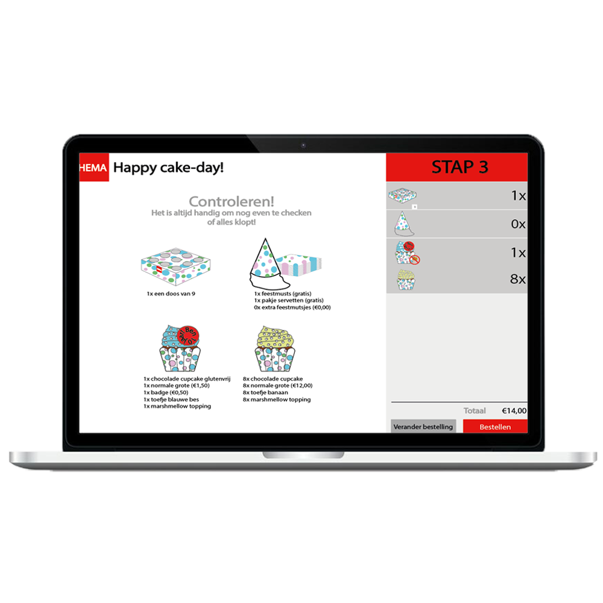

HEMA Cupcake website
Jaar: Propedeuse
Vak: Human Computer Interaction
Cijfer: 7
Opdracht: Maak voor HEMA een actie website die voldoet aan de eisen van de gebruiker. Maak annotaties waar nodig.
Voor het HEMA project moest ik op basis van de eisen van gebruiker en opdrachtgever een website ontwerpen. Hierbij moest ik rekening houden met een aan kernbegrippen. Hieronder staat het document dat ik heb gebruikt als eindontwerp.